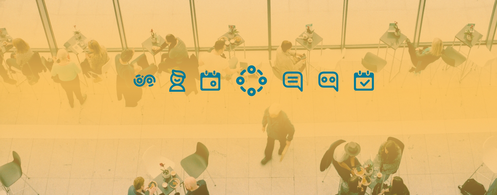
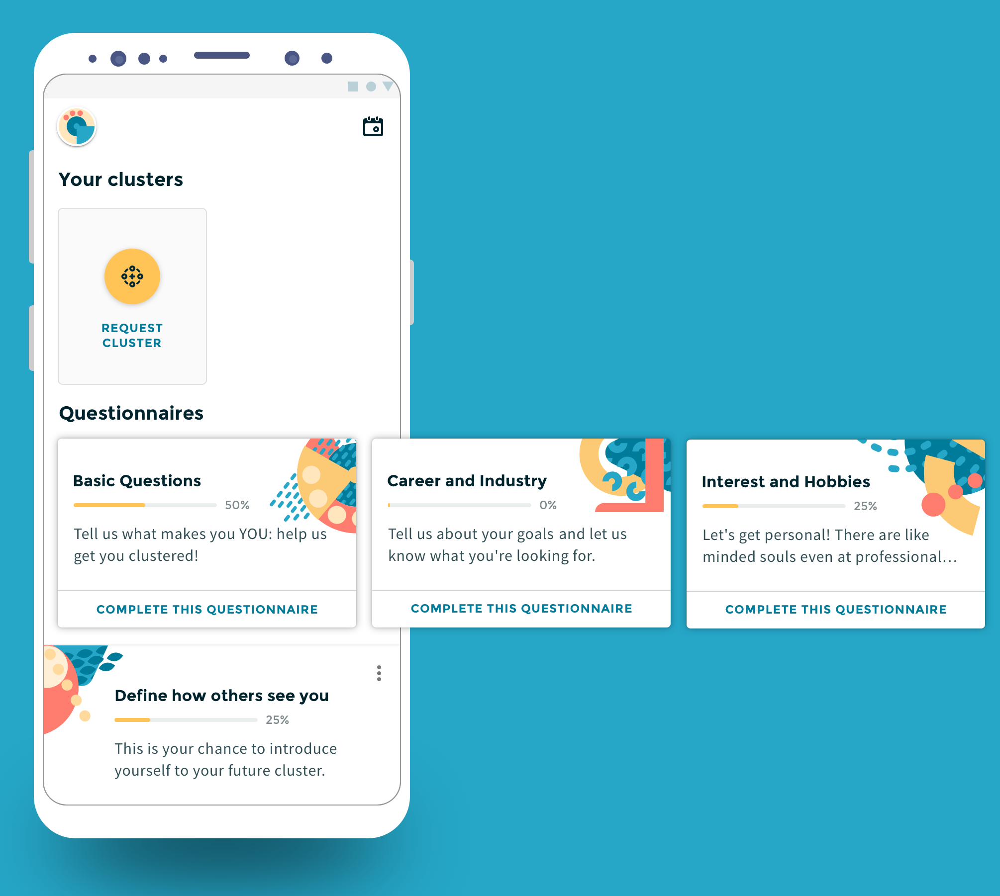
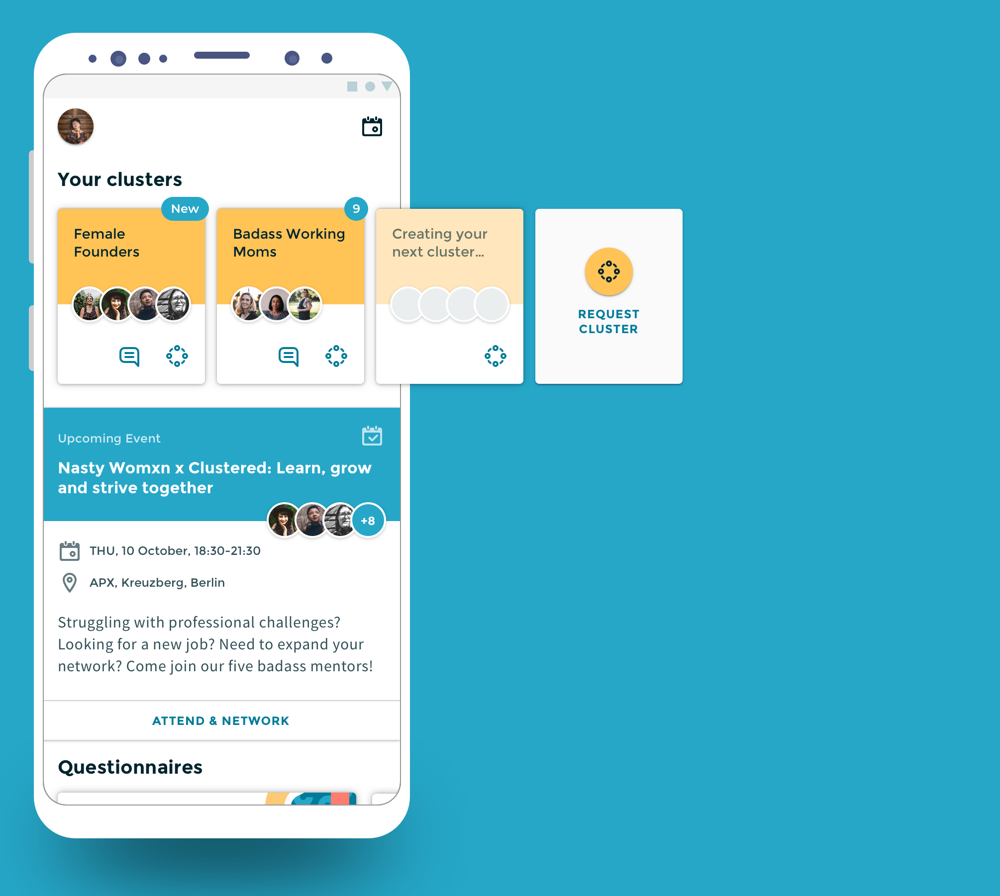
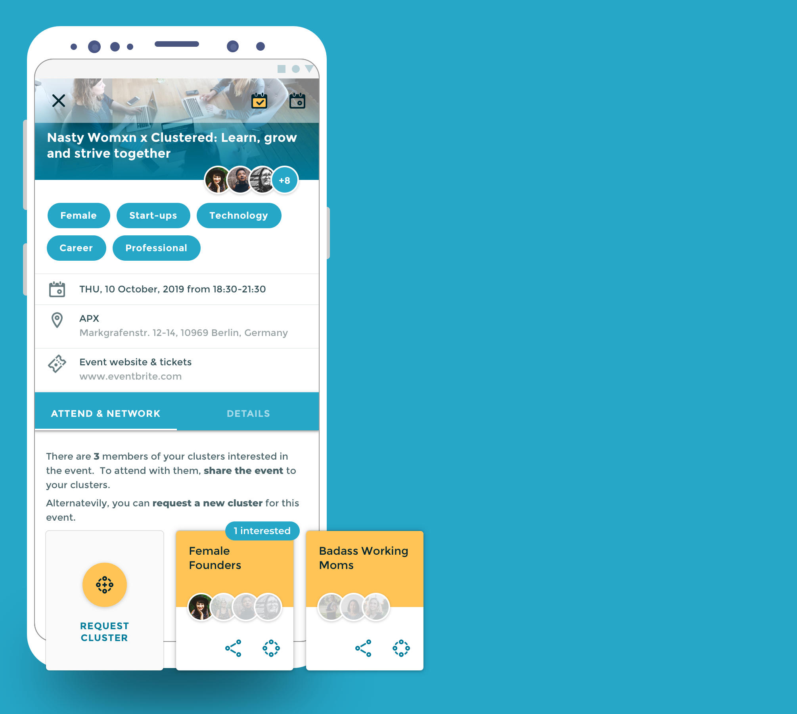

Network smarter, not harder
Scenario
Networking is essential for both business success and long-term career progression. Professionals attend relevant conferences and networking events in an attempt to develop valuable connections.
Problem
People are frequently struggling with face-to-face communication: for millennials, used to digital communication, networking can be a lonely and awkward endeavor. But even for extroverts, meeting like-minded people at events and building meaningful connections that go beyond just handing over your business card can be very tiresome. It's a time-consuming guesswork that requires preliminary research.
Besides that, with 100+ business and networking events happening every week, it's hard to tell what's worth attending. Choosing the right networking settings requires significant effort.

Solution
Clustered is an app designed to help you develop valuable connections with other professionals. By providing you with a tailor-made networking experience, Clustered matches you with people who complement your skills, goals, and passions, helping to increase your chances of building real relationships and boosting the value of your network.
The main concept of the app is the Cluster: a group of 3-5 people matched based on answers to a brief set of questionnaires about personality, goals, attributes, and professional challenges.
Once the user is matched with her first Cluster, she is able to connect with the other members and share ideas/values/needs. The Cluster will have the option to attend curated events together and organise in-person meetups. The event suggestions are personalized based on the Cluster's common goals, challenges, and availability.
Differentiation
Other networking apps don't provide a personalised networking experience; instead, they purely serve as event platforms or only offer peer-to-peer matching without facilitating networking.
Background
Clustered founders have successfully organized several networking events for women in Berlin, where attendees were manually matched into clusters after completing the questionnaire during registration. After an event, they filled out feedback surveys.


My role
- • Work with the founding team on product strategy
- • Research data analysis
- • User Journey Map: two possible roadmaps for the app
- • IA and User flows
- • Wireframes & Prototyping
- • UI Design
- • Branding/Pattern Illustration/Icons design
- • Micro-copy along a copywriter
- • Usability Testing, User Surveys
Tools
- • Figma - Design and prototyping
- • Zeplin - Design system and export for dev
- • Framer - Prototyping special interactions